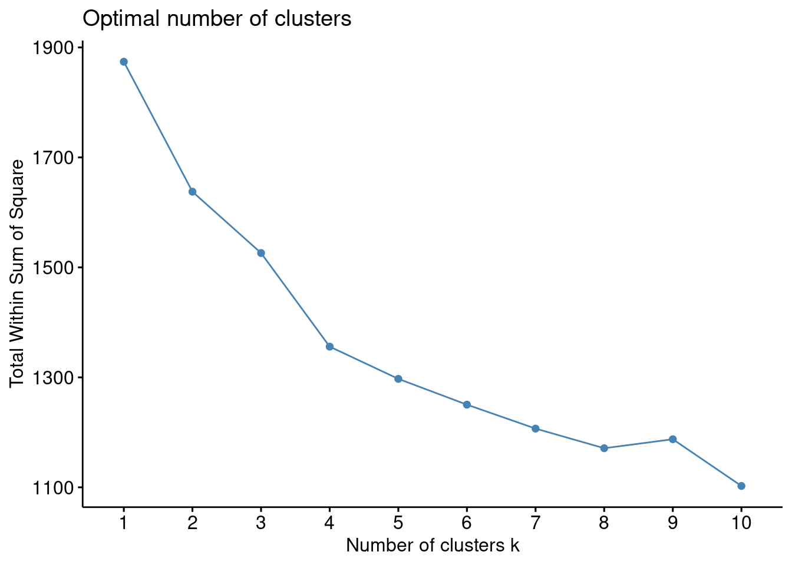
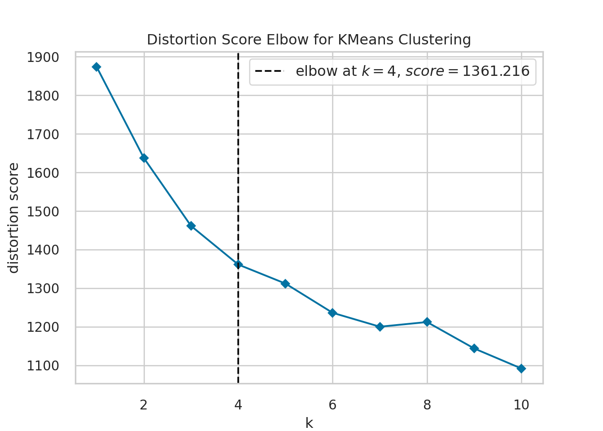
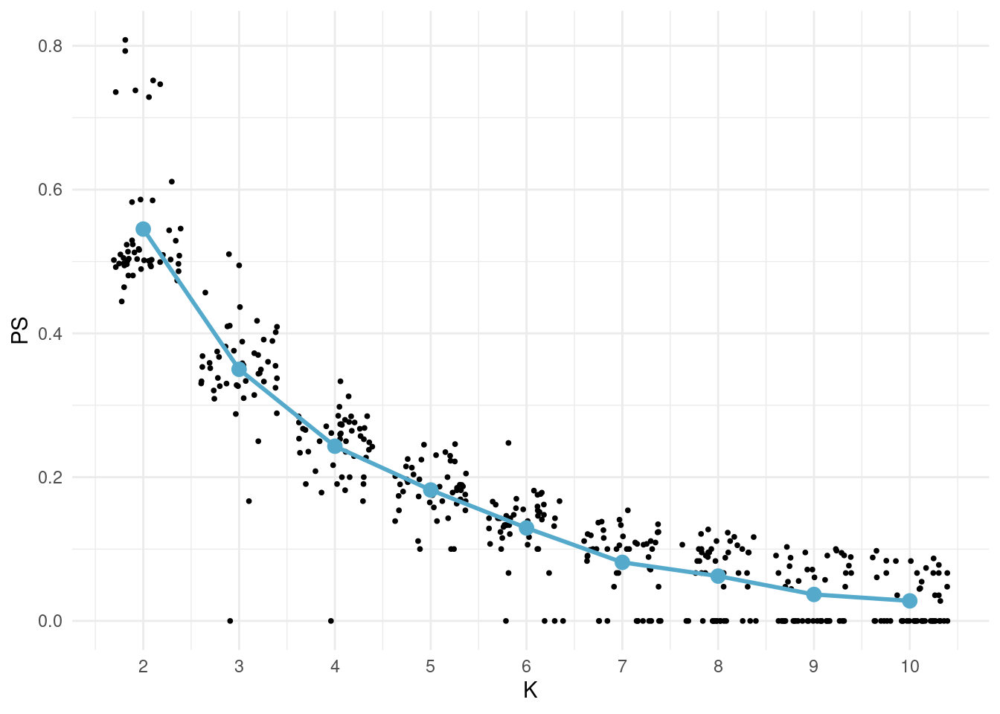
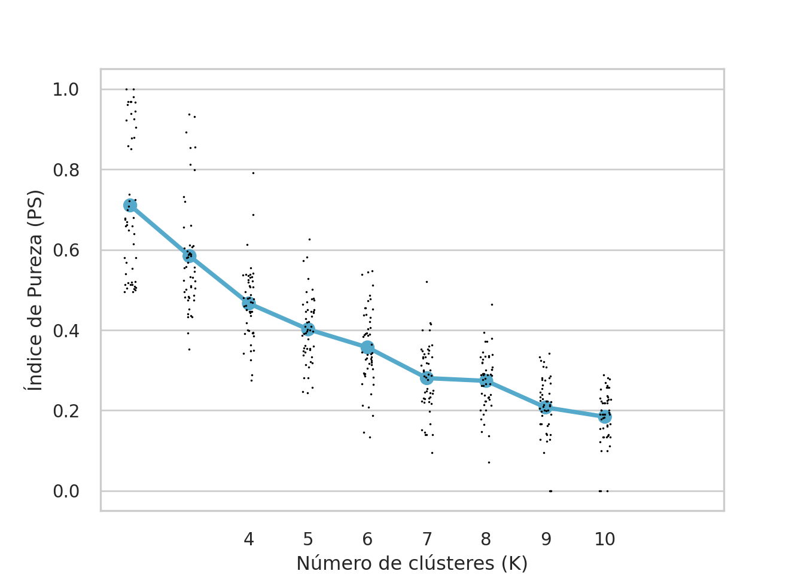
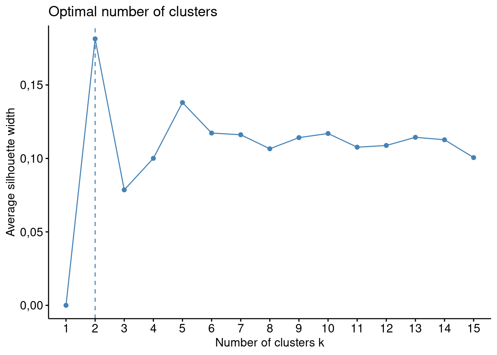
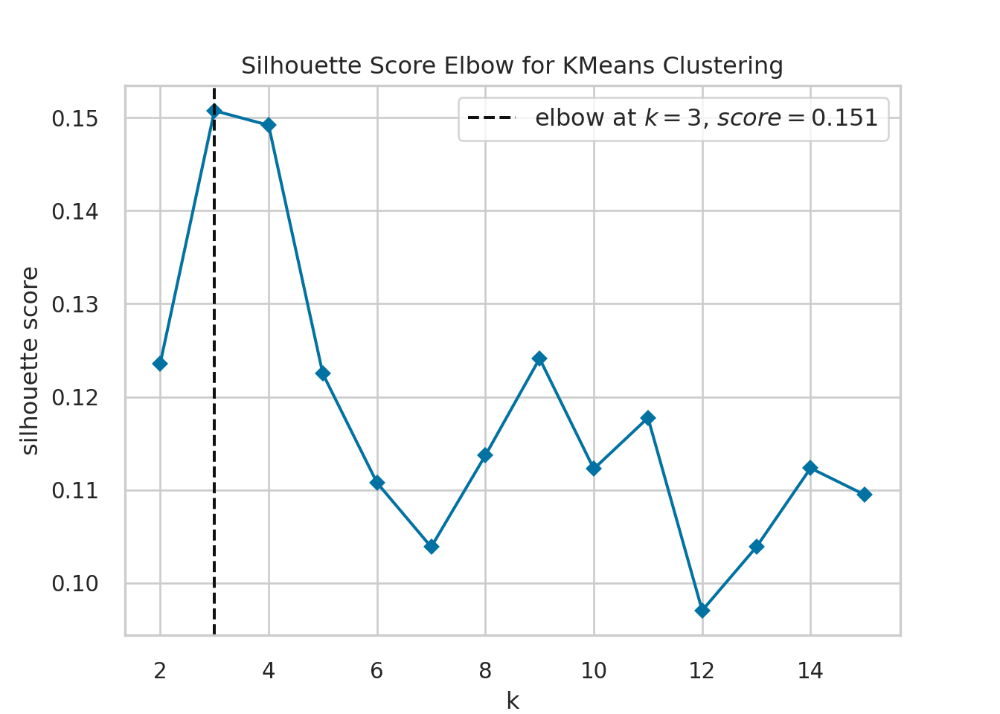
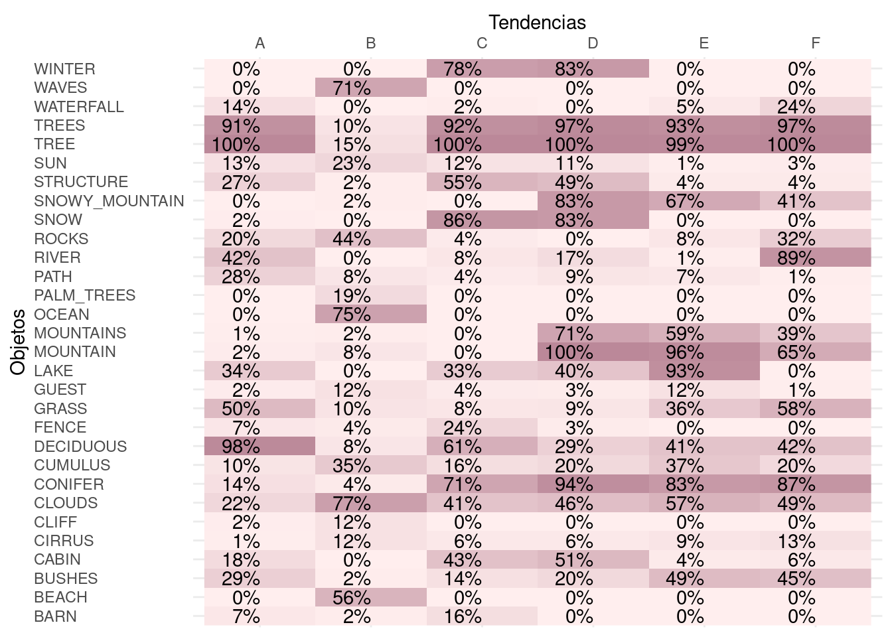
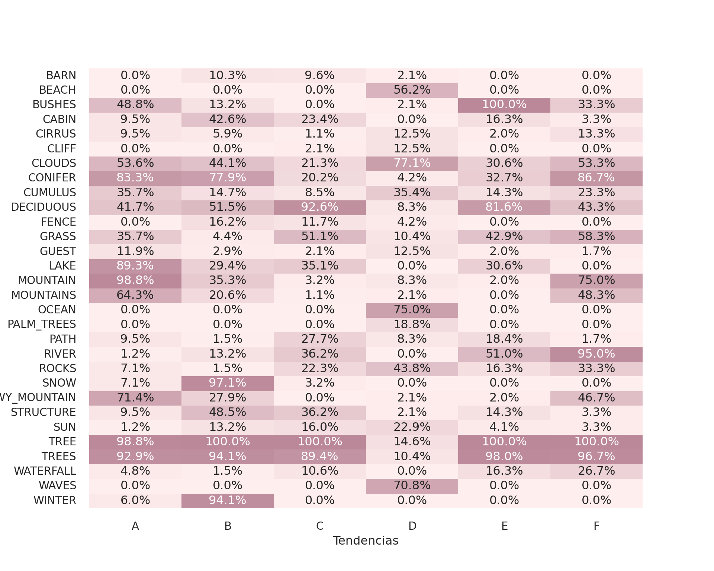

library("readr")
library("dplyr")
library("magrittr")
library("ggplot2")
library("tidyr", exclude = "extract")
library("purrr")
library("scales")
library("factoextra")
library("rsample")
library("cluster")Proyecto: The joy of programming
Etapa 3 de 4
Introducción
En esta etapa se aplican los métodos de evaluación de la calidad de los agrupamientos que han sido presentados en el curso para evaluar la calidad de los grupos resultantes de la primera etapa. Al igual que las etapas anteriores, la implementación de los métodos de evaluación se realiza en lenguajes para el manejo de datos R y Python.
Las bases teóricas para la comprensión de los métodos presentados se encuentran en el material del curso. Los métodos que se aplican a continuación son: evaluación a partir de información externa, método del codo, validación cruzada y coeficiente silueta.
Objetivo actual
La tercera etapa del proyecto está orientada a cumplir el tercer objetivo específico:
Evaluar las tendencias identificadas en los datos de las pinturas y seleccionar el mejor resultado. Caracterizarlo e interpretarlo.
Preliminares
En primer lugar debemos cargar las librerías que vamos a utilizar.
El código carga un conjunto de librerías que son útiles para diferentes tareas, algunas de ellas son: lectura y escritura de datos, visualización y análisis de clusters.
library("readr"): Carga la librería “readr”, que se utiliza para leer datos en R de manera eficiente. Proporciona funciones comoread_csv()para importar datos desde archivos CSV.library("dplyr"): Carga la librería “dplyr”, una librería muy utilizada para la manipulación y transformación de datos en R. Ofrece funciones comofilter(),select(), ymutate().library("magrittr"): Carga la librería “magrittr”, que proporciona el operador%>%(pipe), permitiendo encadenar operaciones de manera más legible.library("ggplot2"): Carga la librería “ggplot2”, una librería popular para la creación de gráficos en R. Utiliza una gramática de gráficos para construir visualizaciones.library("tidyr", exclude = "extract"): Carga la librería “tidyr”, que se utiliza para trabajar con datos desordenados. La opciónexclude = "extract"excluye la funciónextract()de la carga.library("purrr"): Carga la librería “purrr”, que proporciona herramientas para trabajar con funciones y datos de manera más efectiva. Es especialmente útil para trabajar con listas.library("scales"): Carga la librería “scales”, que proporciona funciones para escalar y transformar ejes en gráficos.library("factoextra"): Carga la librería “factoextra”, que se utiliza para visualizar los resultados de análisis de factores y análisis de componentes principales.library("rsample"): Carga la librería “rsample”, que proporciona funciones para la validación cruzada y la creación de conjuntos de entrenamiento/prueba.library("cluster"): Carga la librería “cluster”, que ofrece funciones para realizar análisis de clustering, como K-means y jerárquico.
import numpy as np
import matplotlib.pyplot as plt
import os
import pandas as pd
import seaborn as sns
from itertools import product
from sklearn.cluster import KMeans
from sklearn.model_selection import train_test_split
from yellowbrick.cluster import KElbowVisualizer
from sklearn.metrics import silhouette_scoreEl código importa varias librerías y funciones que son útiles para análisis de datos. Estas librerías incluyen herramientas para manipulación de datos (NumPy, Pandas), visualización (Matplotlib, Seaborn), clustering (KMeans), y evaluación de clustering (KElbowVisualizer, silhouette_score).
import numpy as np: Importa la librería NumPy bajo el aliasnp. NumPy es ampliamente utilizado para operaciones numéricas y matriciales en Python.import matplotlib.pyplot as plt: Importa la librería Matplotlib bajo el aliasplt. Matplotlib se utiliza para la creación de gráficos y visualizaciones en Python.import os: Importa la libreríaos, que proporciona funciones para interactuar con el sistema operativo. Puede ser utilizada para manipular rutas de archivos, entre otras cosas.import pandas as pd: Importa la librería Pandas bajo el aliaspd. Pandas es una librería utilizada para manipulación y análisis de datos en Python, proporcionando estructuras de datos como DataFrames.import seaborn as sns: Importa la librería Seaborn bajo el aliassns. Seaborn es una librería de visualización que trabaja en conjunto con Matplotlib para crear gráficos más atractivos y informativos.from itertools import product: Importa la funciónproductdel móduloitertools.productgenera el producto cartesiano de iterables, y en este contexto, podría usarse para crear combinaciones de parámetros para el análisis.from sklearn.cluster import KMeans: Importa la claseKMeansdel módulosklearn.cluster.KMeansse utiliza para realizar análisis de clustering utilizando el algoritmo k-means.from sklearn.model_selection import train_test_split: Importa la funcióntrain_test_splitdesklearn.model_selection. Esta función se utiliza para dividir un conjunto de datos en conjuntos de entrenamiento y prueba.from yellowbrick.cluster import KElbowVisualizer: Importa la claseKElbowVisualizerdeyellowbrick.cluster.KElbowVisualizeres una herramienta de visualización que ayuda a encontrar el número óptimo de clusters en k-means.from sklearn.metrics import silhouette_score: Importa la funciónsilhouette_scoredesklearn.metrics. Esta función calcula el coeficiente de silueta, una métrica que mide cuán similar es un objeto a su propio cluster en comparación con otros clusters.
Generamos una lista de configuración. Esto es una buena práctica de programación en ciencia de datos. En esta lista vamos a almacenar información que utilizaremos en el código de forma reiterada.
mi_setup <- list(
datos_pinturas = file.path("01_data", "bob-ross.csv"),
archivo_grupos = file.path("01_data", "resultados_r_01.csv")
)
theme_set(theme_minimal())Este código genera una lista de configuración. En esta lista se guardan las rutas y otros parámetros que se usan más adelante en el desarrollo.
datos_pinturas: Ruta del archivo “bob-ross.csv” ubicado en la carpeta “01_data”. Este archivo contiene datos relacionados con pinturas de Bob Ross.archivo_grupos: Ruta del archivo “resultados_r_01.csv” ubicado en la carpeta “01_data”. Este archivo contiene resultados de los grupos obtenidos en el análisis previo.
Adicionalmente, se configura ggplot2 para usar el tema minimal por defecto.
mi_setup = {
"datos_pinturas": os.path.join("01_data", "bob-ross.csv"),
"archivo_grupos": os.path.join("01_data", "resultados_py_01.csv")
}
sns.set_style('whitegrid')
sns.set_context('notebook')Este código genera una lista de configuración. En esta lista se guardan las rutas y otros parámetros que se usan más adelante en el desarrollo.
datos_pinturas: Ruta del archivo “bob-ross.csv” ubicado en la carpeta “01_data”. Este archivo contiene datos relacionados con pinturas de Bob Ross.archivo_grupos: Ruta del archivo “resultados_py_01.csv” ubicado en la carpeta “01_data”. Este archivo contiene resultados de los grupos obtenidos en el análisis previo.
Adicionalmente se configura seaborn para usar el tema whitegrid y el contexto notebook por defecto.
Leemos nuestro archivo de datos.
read_csv(mi_setup$datos_pinturas) -> tb_pinturas
read_csv(mi_setup$archivo_grupos) -> tb_gruposSe utiliza las función read_csv de la librería readr para leer archivos CSV y se asignan los resultados a dos dataframes: tb_pinturas y tb_grupos. Aquí está la explicación:
read_csv(mi_setup$datos_pinturas) -> tb_pinturas: Se lee el archivo CSV cuya ruta está especificada enmi_setup$datos_pinturasutilizando la funciónread_csvdel paquetereadr. El dataframe resultante se asigna a la variabletb_pinturas.read_csv(mi_setup$archivo_grupos) -> tb_grupos: Similar a la primera línea, se lee el archivo CSV cuya ruta está enmi_setup$archivo_grupos. El dataframe resultante se asigna a la variabletb_grupos.
tb_pinturas = pd.read_csv(mi_setup["datos_pinturas"])
tb_grupos = pd.read_csv(mi_setup["archivo_grupos"])Utilizando la librería pandas, mediante la función pd.read_csv se leen los archivos CSV y se asignan los resultados a dos DataFrames: tb_pinturas y tb_grupos. Aquí está la explicación:
tb_pinturas = pd.read_csv(mi_setup["datos_pinturas"]): Se lee el archivo CSV cuya ruta está especificada enmi_setup["datos_pinturas"]. El DataFrame resultante se asigna a la variabletb_pinturas.tb_grupos = pd.read_csv(mi_setup["archivo_grupos"]): Similar a la primera línea, se lee el archivo CSV cuya ruta está enmi_setup["archivo_grupos"]. El DataFrame resultante se asigna a la variabletb_grupos.
Preparación de los datos
Seleccionamos las columnas con las que vamos a realizar nuestros análisis. En este caso se trata de todas las columnas de atributos de las pinturas.
tb_pinturas %>%
select(- EPISODE, - TITLE) -> tb_pinturas_caractSe utiliza el operador %>% de la biblioteca dplyr para realizar una operación de selección de columnas en el DataFrame tb_pinturas. Aquí se explica paso a paso:
tb_pinturas %>%: El operador%>%(pipe) se utiliza para pasar el objetotb_pinturasal siguiente paso de la cadena de operaciones.select(- EPISODE, - TITLE): Se utiliza la funciónselectdel paquetedplyrpara elegir columnas específicas del DataFrametb_pinturas. La notación-se utiliza para excluir las columnas llamadas “EPISODE” y “TITLE”. Esto significa que todas las columnas excepto “EPISODE” y “TITLE” serán seleccionadas.-> tb_pinturas_caract: El resultado de la selección se asigna a un nuevo DataFrame llamadotb_pinturas_caract.
tb_pinturas_caract = tb_pinturas.drop(["EPISODE", "TITLE"], axis=1)Este código elimina las columnas “EPISODE” y “TITLE” del DataFrame tb_pinturas, y el resultado se guarda en un nuevo DataFrame llamado tb_pinturas_caract. Se realiza una operación de eliminación de columnas en el DataFrame tb_pinturas. Aquí se explica paso a paso:
tb_pinturas_caract = tb_pinturas.drop(["EPISODE", "TITLE"], axis=1): Se utiliza el método drop de pandas para eliminar las columnas “EPISODE” y “TITLE” del DataFrame tb_pinturas. El argumento axis=1 indica que la operación se realiza a lo largo de las columnas.
Evaluación de los grupos conformados
Las siguientes secciones muestran la evaluación de los grupos conformados por medio de distintos métodos. La implementación de los métodos vistos presenta una exigencia media a nivel de programación. Es necesario escribir funciones y ciclos. No obstante, todo se encuentra explicado en detalle.
En nuestro proyecto tenemos la tarea de encontrar grupos de pinturas de acuerdo con los objetos presentes en ellas. El desarrollo de estos códigos nos permite evaluar los grupos que conformamos en la primera unidad e interpretar estos grupos.
Evaluación a partir de información externa
Para nuestro dataset de pinturas no tenemos el caso de información externa; pero podemos simular un escenario muy parecido. En primer lugar debemos programar la función ps, que nos permite obtener la fuerza de predicción de un sistema de grupos estimados sobre un sistema de grupos verdaderos. El código es el siguiente:
ps <- function(true_groups, estim_groups){
sprintf("Id_%04d", seq_along(true_groups)) -> id_data
setNames(
true_groups,
id_data
) -> vc_true
setNames(
estim_groups,
id_data
) -> vc_estim
expand_grid(id_1 = id_data, id_2 = id_data) %>%
mutate(
true_1 = vc_true[id_1],
true_2 = vc_true[id_2],
paired_true = as.numeric(true_1 == true_2),
estim_1 = vc_estim[id_1],
estim_2 = vc_estim[id_2],
paired_estim = as.numeric(estim_1 == estim_2),
no_perm = as.numeric(paired_true > paired_estim)
) %>%
group_by(true_1) %>%
summarise(
paired_true = sum(paired_true),
no_perm = sum(no_perm)
) %>%
filter(paired_true != 1) %>%
mutate(
ps = 1 - no_perm/(paired_true - sqrt(paired_true))
) %>% pull(ps) %>% min -> PS
PS
}Esta función calcula la fuerza de predicción (PS) basada en la comparación de grupos verdaderos y estimados utilizando permutaciones. La lógica exacta detrás del cálculo de la fuerza de predicción reside en la manipulación de datos y las transformaciones realizadas en el dataframe generado por expand_grid.
Generación de identificadores únicos (
id_data):Se crea una lista de identificadores únicos formateados como “Id_XXXX”, donde XXXX representa un número secuencial de cuatro dígitos. La longitud de la lista está determinada por la cantidad de elementos en
true_groups.sprintf("Id_%04d", seq_along(true_groups)) -> id_data: Crea un vector de identificación (id_data) utilizando la funciónsprintfpara formatear números como cadenas de texto con un patrón específico("Id_%04d")agregando ceros a la izquierda a la secuenciaseq_along(true_groups)de números que van desde 1 hasta la longitud detrue_groups.
Creación de diccionarios para mapeo (
vc_trueyvc_estim):Se crean diccionarios que mapean los identificadores a los valores correspondientes en los grupos verdaderos (
vc_true) y estimados (vc_estim).setNames(true_groups, id_data) -> vc_true: Asigna nombres al vectortrue_groupsutilizando los identificadores enid_data. El resultado se guarda envc_true.setNames(estim_groups, id_data) -> vc_estim: Similar al paso anterior, asigna nombres al vectorestim_groupsutilizando los identificadores enid_data. El resultado se guarda envc_estim.
Generación de dataframe con todas las combinaciones posibles:
Se generan todas las combinaciones posibles de pares de identificadores en
id_data. Estos pares se convierten en columnas ‘id_1’ y ‘id_2’.expand_grid(id_1 = id_data, id_2 = id_data) %>% ...: Utiliza la funciónexpand_gridpara crear un dataframe con todas las combinaciones posibles de identificadores deid_data. Este dataframe contiene las columnasid_1eid_2, que son todas las parejas posibles de observaciones. El operador%>%(pipe) da continuidad a la aplicación de operaciones y transformaciones.
Mapeo de valores verdaderos y estimados:
Se agregan columnas al dataFrame
dfque contienen los valores correspondientes a ‘id_1’ y ‘id_2’ para ambos grupos verdaderos y estimados.mutate(...): Agrega nuevas columnas al dataframe.Se crean las columnas
true_1ytrue_2, que muestran en qué grupo, de los grupos verdaderos, se encuentran las observaciones correspondientes a las columnasid_1eid_2y la columnapaired_trueque indica que la pareja correspondiente aid_1eid_2se encuentra en el mismo grupo verdadero.Análogamente, se crean las columnas
estim_1yestim_2, que muestran en qué grupo, de los grupos estimados, se encuentran las observaciones correspondientes a las columnasid_1eid_2y la columnapaired_estimque indica que la pareja correspondiente aid_1eid_2se encuentra en el mismo grupo estimado.
Cálculo de
no_perm:Se compara el número de parejas coincidentes entre
paired_trueypaired_estim, y se almacena en la columnano_perm. Luego, se agrupa el DataFrame por los valores verdaderos (‘true_1’) y se realiza un resumen.La columna
no_permmuestra los casos en los que una pareja en el mismo grupo verdadero (paired_true = 1) no se encuentra en el mismo grupo estimado (paired_estim = 0); es decir, es una pareja que no es permanente.group_by(true_1) %>% summarise(...): Agrupa los datos por la columnatrue_1y calcula la suma depaired_trueyno_permpara cada grupo. Con esto se tiene la cantidad de parejas en los grupos reales (paired_true) y la cantidad de parejas que no son permanentes para cada cluster verdadero.
Cálculo de la fuerza de predicción (
ps):Se calcula la fuerza de predicción (
ps) utilizando la fórmula específica basada en los valores calculados en el paso anterior.filter(paired_true != 1) %>% mutate(...): Retira los grupos verdaderos de un solo elemento; son aquellos dondepaired_truees igual a 1.ps = 1 - no_perm/(paired_true - sqrt(paired_true))calcula la fuerza de predicción para cada grupo verdadero.
Devolver el valor mínimo de
ps(PS):La función devuelve el valor mínimo de la fuerza de predicción calculada.
pull(ps) %>% min -> PS: Extrae la columnapsy calcula el mínimo. El resultado se asigna a la variablePS.PS: Devuelve el valor calculado de PS.
def ps(true_groups, estim_groups):
id_data = [f"Id_{i:04d}" for i in range(len(true_groups))]
vc_true = dict(zip(id_data, true_groups))
vc_estim = dict(zip(id_data, estim_groups))
df = pd.DataFrame(list(product(id_data, repeat=2)), columns=['id_1', 'id_2'])
df['true_1'] = df['id_1'].map(vc_true)
df['true_2'] = df['id_2'].map(vc_true)
df['paired_true'] = np.where(df['true_1'] == df['true_2'], 1, 0)
df['estim_1'] = df['id_1'].map(vc_estim)
df['estim_2'] = df['id_2'].map(vc_estim)
df['paired_estim'] = np.where(df['estim_1'] == df['estim_2'], 1, 0)
df['no_perm'] = np.where(df['paired_true'] > df['paired_estim'], 1, 0)
result_df = df.groupby('true_1').agg(paired_true=('paired_true', 'sum'),
no_perm=('no_perm', 'sum')).reset_index()
result_df = result_df[result_df['paired_true'] != 1]
result_df['ps'] = 1 - result_df['no_perm'] / (result_df['paired_true'] - np.sqrt(result_df['paired_true']))
PS = result_df['ps'].min()
return PSLa función ps realiza los siguientes pasos:
Generación de identificadores únicos (
id_data):Se crea una lista de identificadores únicos formateados como “Id_XXXX”, donde XXXX representa un número secuencial de cuatro dígitos. La longitud de la lista está determinada por la cantidad de elementos en
true_groups.range(len(true_groups)): Genera una secuencia de números desde 0 hasta la longitud de la listatrue_groupsmenos 1. Esto proporciona índices únicos para cada elemento en la listatrue_groups.f"Id_{i:04d}": Utiliza una cadena de formato f-string para crear cadenas de texto con el formato “Id_XXXX”, donde XXXX representa el índice con un relleno de ceros a la izquierda para asegurar que siempre tenga cuatro dígitos.[...]: Comprende la comprensión de listas, que es una forma concisa de crear listas. En este caso, se genera una lista que contiene las cadenas de texto resultantes.
Creación de diccionarios para mapeo (
vc_trueyvc_estim):Se crean diccionarios que mapean los identificadores a los valores correspondientes en los grupos verdaderos (
vc_true) y estimados (vc_estim).zip(id_data, true_groups): Combina los elementos de las listasid_dataytrue_groupsen pares de tuplas. Cada tupla contiene un elemento deid_dataemparejado con el correspondiente elemento detrue_groups.dict(...): Convierte las tuplas generadas porzipen un diccionario, donde el primer elemento de cada tupla (deid_data) se convierte en la clave y el segundo elemento (detrue_groups) se convierte en el valor.vc_true = dict(zip(id_data, true_groups))crea un diccionario (vc_true) donde cada identificador único enid_datase asigna al valor correspondiente entrue_groups.vc_estim = dict(zip(id_data, estim_groups))realiza la misma operación pero para las listasid_datayestim_groups, creando un diccionario (vc_estim) con los valores estimados asociados a los identificadores únicos.
Generación de dataframe con todas las combinaciones posibles (
df):Se utiliza la función
productdel móduloitertoolspara generar todas las combinaciones posibles de pares de identificadores enid_data. Estos pares se convierten en columnas ‘id_1’ y ‘id_2’ en el dataframedf.product(id_data, repeat=2): Utiliza la funciónproductdel móduloitertoolspara generar todas las combinaciones posibles de pares de elementos en la listaid_data. El parámetrorepeat=2indica que se deben generar combinaciones de longitud 2 (pares).list(...): Convierte el objeto iterable resultante deproducten una lista.pd.DataFrame(...): Crea un dataframe de Pandas a partir de la lista generada. El dataframe tendrá dos columnas llamadas ‘id_1’ y ‘id_2’.df = pd.DataFrame(list(product(id_data, repeat=2)), columns=['id_1', 'id_2'])crea un dataframe donde cada fila contiene todas las combinaciones posibles de pares de identificadores únicos enid_data. Cada par de identificadores se coloca en las columnas ‘id_1’ e ‘id_2’, respectivamente.
Mapeo de valores verdaderos y estimados en el dataframe (
df):Se agregan columnas al dataframe
dfque contienen los valores correspondientes a ‘id_1’ y ‘id_2’ para ambos grupos verdaderos y estimados.Se crean las columnas
true_1ytrue_2, que muestran en qué grupo, de los grupos verdaderos, se encuentran las observaciones correspondientes a las columnasid_1eid_2y la columnapaired_trueque indica que la pareja correspondiente aid_1eid_2se encuentra en el mismo grupo verdadero.Análogamente, se crean las columnas
estim_1yestim_2, que muestran en qué grupo, de los grupos estimados, se encuentran las observaciones correspondientes a las columnasid_1eid_2y la columnapaired_estimque indica que la pareja correspondiente aid_1eid_2se encuentra en el mismo grupo estimado.
Cálculo de
no_permyresult_df:Se compara el número de parejas coincidentes entre
paired_trueypaired_estim, y se almacena en la columnano_perm. Luego, se agrupa el DataFrame por los valores verdaderos (‘true_1’) y se realiza un resumen.La columna
no_permmuestra los casos en los que una pareja en el mismo grupo verdadero (paired_true = 1) no se encuentra en el mismo grupo estimado (paired_estim = 0); es decir, es una pareja que no es permanente.result_df = df.groupby('true_1'): Agrupa los datos por la columnatrue_1..agg(paired_true=('paired_true', 'sum'), no_perm=('no_perm', 'sum'))calcula la suma depaired_trueyno_permpara cada grupo. Con esto se tiene la cantidad de parejas en los grupos reales (paired_true) y la cantidad de parejas que no son permanentes para cada cluster verdadero.
Cálculo de la fuerza de predicción (
ps):Se calcula la fuerza de predicción (
ps) utilizando la fórmula específica basada en los valores calculados en el paso anterior.result_df[result_df['paired_true'] != 1]: Retira los grupos verdaderos de un solo elemento; son aquellos dondepaired_truees igual a 1.result_df['ps'] = 1 - result_df['no_perm'] / (result_df['paired_true'] - np.sqrt(result_df['paired_true']))calcula la fuerza de predicción para cada grupo verdadero.
Devolver el valor mínimo de
ps(PS):La función devuelve el valor mínimo de la fuerza de predicción calculada.
PS = result_df['ps'].min(): Extrae la columnapsy calcula el mínimo. El resultado se asigna a la variablePS.return PS: Devuelve el valor calculado de PS.
Ya con nuestra función ps, podemos simular el caso de la información externa. Supongamos que tenemos una columna que distribuye las pinturas en 16 grupos dependiendo de si presentan o no montañas, playas, estructuras o invierno. Para fines prácticos, estas 16 categorías se toman como las categorías verdaderas y se mide la aproximación de los grupos conformados previamente con estas categorías. Para eso utilizamos la función ps de la siguiente manera:
tb_pinturas_caract %>%
mutate(
true_clust = sprintf("%d%d%d%d", MOUNTAIN, BEACH, STRUCTURE, WINTER)
) %>% pull(true_clust) -> true_cluster
ps(true_cluster, tb_grupos$grupos_jerar)
ps(true_cluster, tb_grupos$grupos_kmeans)
ps(true_cluster, tb_grupos$grupos_dbscan)El código crea una nueva variable llamada true_clust en el dataframe tb_pinturas_caract, que representa un código de cluster formado por la concatenación de las variables MOUNTAIN, BEACH, STRUCTURE, y WINTER. Luego, se extrae esa variable y se asigna a la variable true_cluster. Esta variable se toma como una agrupación verdadera para probar la evaluación a partir de información externa.
tb_pinturas_caract %>%: Indica que se aplicarán operaciones al objetotb_pinturas_caractutilizando un pipe (%>%), lo que significa que el resultado de la operación previa se pasa como argumento a la siguiente operación.mutate(true_clust = sprintf("%d%d%d%d", MOUNTAIN, BEACH, STRUCTURE, WINTER)): Agrega una nueva columna llamadatrue_clustal dataframetb_pinturas_caract. El valor de esta columna se genera utilizando la funciónsprintfpara formatear una cadena de texto. Los valoresMOUNTAIN,BEACH,STRUCTURE, yWINTERse concatenan.%>% pull(true_clust): Extrae la columna recién creada (true_clust) del dataframe resultante y asigna el resultado a la variabletrue_cluster. Luego se procede a evaluar los grupos conformados anteriormente contrastándolos con esta columna de grupos verdaderos.
true_cluster = tb_pinturas_caract.apply(
lambda row: "{:d}{:d}{:d}{:d}".format(
row['MOUNTAIN'], row['BEACH'], row['STRUCTURE'], row['WINTER']
), axis=1
).tolist()
ps(true_cluster, tb_grupos['grupos_jerar'])ps(true_cluster, tb_grupos['grupos_kmeans'])ps(true_cluster, tb_grupos['grupos_dbscan'])El código crea la lista true_cluster, donde cada elemento de la lista es una cadena de texto que representa un código de cluster formado por la concatenación de los valores de las columnas ‘MOUNTAIN’, ‘BEACH’, ‘STRUCTURE’, y ‘WINTER’ para cada fila en el DataFrame tb_pinturas_caract. Esta lista se toma como una agrupación verdadera para probar la evaluación a partir de información externa.
tb_pinturas_caract.apply(...): Se utiliza la funciónapplyde Pandas para aplicar una función a lo largo de las filas del DataFrametb_pinturas_caract.lambda row: "{:d}{:d}{:d}{:d}".format(...): Se define una función lambda que toma una fila (row) del DataFrame y devuelve una cadena de texto formateada. En este caso, la cadena de texto se forma concatenando los valores de las columnas ‘MOUNTAIN’, ‘BEACH’, ‘STRUCTURE’, y ‘WINTER’.axis=1: Indica que la función lambda se aplicará a lo largo de las filas..tolist(): Convierte el resultado a una lista. Luego se procede a evaluar los grupos conformados anteriormente contrastándolos con esta columna de grupos verdaderos.
¿Cuánto da cada resultado? ¿Cómo se interpreta? ¿Cuál es el método que mejor se adapta a nuestra variable categórica simulada?
Método del codo
El método del codo tiene como objetivo encontrar un número de grupos \(k\) óptimo. Por esta razón, suele estar enfocado en la estimación mediante el algoritmo \(k\)-means. Veamos la construcción de los tráficos correspondientes.
fviz_nbclust(x = tb_pinturas_caract, FUNcluster = kmeans, method = "wss", k.max = 10)
El código utiliza la función fviz_nbclust para visualizar diferentes métodos y determinar el número óptimo de clusters en el conjunto de datos tb_pinturas_caract. La métrica evaluada es la suma de los cuadrados dentro de los clusters (WSS), y la visualización puede ayudar a identificar el número óptimo de clusters al observar el codo en la gráfica resultante.
fviz_nbclust(...): Utiliza la funciónfviz_nbclustdel paquetefactoextrapara determinar el número óptimo de clusters en un conjunto de datos.x = tb_pinturas_caract: Se especifica que el conjunto de datostb_pinturas_caractes el objeto en el que se realizará el análisis de clusters.FUNcluster = kmeans: Indica que se utilizará el algoritmo de k-means para realizar el análisis de clusters, utilizando la funciónkmeans.method = "wss": Selecciona el método para determinar el número óptimo de clusters. En este caso, se utiliza “wss” (Within-Cluster Sum of Squares), que evalúa la varianza dentro de los clusters.k.max = 10: Especifica el número máximo de clusters a considerar. En este caso, se evaluará hasta un máximo de 10 clusters.
k_values = range(1, 11)
kmeans_model = KMeans(n_init = 1)
visualizer = KElbowVisualizer(kmeans_model, k=k_values, metric='distortion', timings=False)
visualizer = visualizer.fit(tb_pinturas_caract)
visualizer.show()
plt.close()El código utiliza el método del codo para determinar el número óptimo de clusters en el conjunto de datos tb_pinturas_caract utilizando el algoritmo de k-medias. La visualización de la distorsión en función del número de clusters ayuda a identificar el punto en el que la distorsión deja de disminuir rápidamente, lo que puede indicar el número óptimo de clusters para el conjunto de datos.
Definición de
k_values: Se crea una secuencia de valores desde 1 hasta 10 para representar diferentes números de clusters.Inicialización de
kmeans_model: Se crea una instancia del modelo de KMeans (k-medias) conn_init=1, indicando que el algoritmo se ejecutará solo una vez con una inicialización diferente.Creación del visualizador
visualizer: Se utilizaKElbowVisualizerdel paqueteyellowbrickpara visualizar la métrica de “distorsión” en función del número de clusters. La distorsión mide cuánto se alejan las muestras dentro de un cluster promedio. Se utilizatimings=Falsepara evitar la visualización de tiempos de ejecución.Ajuste del modelo al conjunto de datos: Se ajusta el modelo de k-medias al conjunto de datos
tb_pinturas_caractutilizando el métodofit()del visualizador.Visualización y cierre del gráfico: Se muestra la visualización generada por el visualizador y se cierra la figura gráfica después de ser visualizada.
En ambos casos, podemos ver el gráfico del método del codo y establecer un número óptimo de grupos.
Validación cruzada
Los métodos de validación cruzada se basan en la distribución de dos subconjuntos de datos, para entrenamiento del modelo y para prueba. Siguiendo lo aprendido, en primera instancia debemos escribir una función que realice los siguientes pasos dado un conjunto de datos.
Divida el conjunto de datos en segmentos de entrenamiento y prueba.
Estime la estructura de grupos usando el procedimiento a evaluar. En este caso lo realizamos usando \(k\)-means, pero podemos cambiar el código para que funcione con otros métodos.
A partir del modelo estimado por medio de los datos de entrenamiento, pronosticar los grupos correspondientes a los individuos del conjunto de datos de prueba. Estas categorías se toman como categorías verdaderas,
Ajustar el modelo con los mismos hiperparámetros al conjunto de datos de prueba. De esta forma se obtiene una nueva estructura de grupos. Estas categorías se toman como categorías estimadas.
Comparar las categorías estimadas con las verdaderas utilizando la función
psdefinida enteriormente.
ps_cv_k <- function(k, tb_data, cv_ratio = 3/4){
tb_data %>%
initial_split(prop = cv_ratio) -> split_data
split_data %>%
training %>%
kmeans(k) -> ls_kmeans
tb_centers <- ls_kmeans$centers
n_centers <- nrow(tb_centers)
split_data %>%
testing %>%
rbind(tb_centers) %>%
dist %>%
as.matrix %>%
extract(seq(n_centers), -seq(n_centers)) %>% t %>%
"-"() %>%
max.col() -> vc_predicted
split_data %>%
testing %>%
kmeans(k) %>%
pluck("cluster") -> vc_test_clusters
ps(vc_predicted, vc_test_clusters)
}Paso 1: tb_data %>% initial_split(prop = cv_ratio) -> split_data. Dividir los datos en conjuntos de entrenamiento y prueba.
Paso 2: split_data %>% training %>% kmeans(k) -> ls_kmeans Aplicar k-medias (kmeans) al conjunto de entrenamiento.
Paso 3: tb_centers <- ls_kmeans$centers; n_centers <- nrow(tb_centers) Obtener los centros de los clusters del modelo k-medias
Paso 4: Determinar el grupo de cada observación en el conjunto de prueba, este se toma como etiqueta verdadera.
split_data %>% testing %>% rbind(tb_centers) %>% dist %>% ...Calcular las distancias de los puntos de prueba a los centros de los clusters.extract(seq(n_centers), -seq(n_centers)) %>% tEliminar las distancias a los propios centros"-"() %>% max.col() -> vc_predictedEncontrar el índice del centro más cercano para cada punto de prueba.
Paso 5: Aplicar el algoritmo y encontrar nuevos grupos para los datos de prueba, estos se toman como etiquetas a evaluar.
split_data %>% testing %>% kmeans(k)Aplicar k-medias al conjunto de pruebapluck("cluster") -> vc_test_clustersObtener la asignación de clusters para los puntos de prueba
Paso 6: ps(vc_predicted, vc_test_clusters) Calcular y devolver la medida de validez del clustering (ps).
def ps_cv_k(k, tb_data, cv_ratio=3/4):
train_data, test_data = train_test_split(tb_data, test_size=1-cv_ratio)
kmeans_model = KMeans(n_clusters=k, n_init=1)
kmeans_model = kmeans_model.fit(train_data)
vc_predicted = kmeans_model.predict(test_data).tolist()
kmeans_test = KMeans(n_clusters=k, n_init=1)
vc_test_clusters = kmeans_test.fit_predict(test_data).tolist()
return ps(vc_predicted, vc_test_clusters)Paso 1: train_data, test_data = train_test_split(tb_data, test_size=1-cv_ratio) Dividir los datos en conjuntos de entrenamiento y prueba
Paso 2: kmeans_model = KMeans(n_clusters=k, n_init=1); kmeans_model = kmeans_model.fit(train_data) Aplicar k-medias (KMeans) al conjunto de entrenamiento
Paso 3: vc_predicted = kmeans_model.predict(test_data).tolist() Obtener las asignaciones de cluster para los puntos de prueba
Paso 4: kmeans_test = KMeans(n_clusters=k, n_init=1); vc_test_clusters = kmeans_test.fit_predict(test_data).tolist() Aplicar k-medias al conjunto de prueba
Paso 5: return ps(vc_predicted, vc_test_clusters) Calcular y devolver la medida de validez del clustering (ps)
Luego de tener nuestra función lista, resulta sencillo realizar un estudio de simulación que repita la estimación de la fuerza de predicción un número arbitrario de veces. Con esto podemos establecer la distribución de nuestro estadístico de validación y además obtener su promedio.
K_seq <- 2:10
map(
1:50,
function(iter){
tibble(
iter = iter,
K = K_seq,
PS = map_dbl(
K,
ps_cv_k,
tb_data = tb_pinturas_caract,
cv_ratio = 0.6
)
)
}
) %>% bind_rows() -> tb_sim
tb_sim %>% group_by(K) %>% summarise(PS = mean(PS)) -> tb_sim_mean
ggplot() +
geom_jitter(aes(K, PS), tb_sim, size = 0.7) +
geom_point(aes(K, PS), tb_sim_mean, colour = "#55aacc", size = 3) +
geom_line(aes(K, PS), tb_sim_mean, colour = "#55aacc", size = 1) +
scale_x_continuous(breaks = K_seq)
El código realiza 50 iteraciones, en cada iteración evalúa la medida de validez del clustering (PS) para diferentes valores de K utilizando la función ps_cv_k. Luego, se calcula la media de la medida de validez para cada valor de K a lo largo de todas las iteraciones. Finalmente, se visualizan los resultados mediante un gráfico utilizando ggplot2, donde los puntos representan las medidas de validez para cada iteración y el punto y la línea en azul representan la media para cada valor de K. La dispersión de puntos proporciona una idea de la variabilidad de la medida de validez para cada valor de K.
Paso 1: K_seq <- 2:10 Definir una secuencia de valores para K (número de clusters)
Paso 2: map(1:50,function(iter){...}) %>% Realizar un mapeo (map) sobre las iteraciones de 1 a 50
Paso 3: tibble(...) Para cada iteración, calcular la medida de validez del clustering (PS)
Paso 4: bind_rows() -> tb_sim Unir los resultados de todas las iteraciones en un solo marco de datos
Paso 5: tb_sim %>% group_by(K) %>% summarise(PS = mean(PS)) -> tb_sim_mean Calcular la media de la medida de validez del clustering para cada valor de K
Paso 6: ggplot() + ... Crear un gráfico utilizando ggplot2 para visualizar los resultados
K_seq = range(2, 11)
tb_sim_list = []
for iter in range(1, 51):
ps_values = list(map(
lambda k: ps_cv_k(k, tb_data=tb_pinturas_caract, cv_ratio=0.6),
K_seq
))
iter_data = pd.DataFrame({
'iter': [iter] * len(K_seq),
'K': K_seq,
'PS': ps_values
})
tb_sim_list.append(iter_data)
tb_sim = pd.concat(tb_sim_list, ignore_index=True)
tb_sim_mean = tb_sim.groupby('K')['PS'].mean().reset_index()
sns.stripplot(
x='K', y='PS',
data=tb_sim, size=1.3, legend=False,
color = "black"
)
sns.pointplot(x='K', y='PS', data=tb_sim_mean, color='#55aacc')
plt.xlabel('Número de clústeres (K)')
plt.ylabel('Índice de Pureza (PS)')
plt.xticks(K_seq)
código realiza 50 iteraciones, en cada iteración evalúa la medida de validez del clustering (PS) para diferentes valores de K utilizando la función ps_cv_k. Luego, se concatenan los resultados de todas las iteraciones en un solo dataframe (tb_sim). Se calcula la media de la medida de validez para cada valor de K y se visualizan los resultados mediante un gráfico utilizando la biblioteca seaborn. Los puntos en el gráfico representan las medidas de validez para cada iteración, y los puntos y la línea azul representan la media para cada valor de K. La dispersión de puntos proporciona una idea de la variabilidad de la medida de validez para cada valor de K.
Paso 1: K_seq = range(2, 11) Definir una secuencia de valores para K (número de clústeres)
Paso 2: tb_sim_list = [] Inicializar una lista para almacenar los resultados de cada iteración
Paso 3: for iter in range(1, 51): Realizar un bucle sobre las iteraciones de 1 a 50, al interior de este bucle se realizan los pasos 4, 5 y 6.
Paso 4: ps_values = list(map(lambda k: ps_cv_k(k, tb_data=tb_pinturas_caract, cv_ratio=0.6), K_seq)) Calcular la medida de validez del clustering (PS) para cada valor de K
Paso 5: iter_data = pd.DataFrame({...}) Crear un DataFrame con los resultados de la iteración actual
Paso 6: tb_sim_list.append(iter_data) Agregar los resultados a la lista
Paso 7: tb_sim = pd.concat(tb_sim_list, ignore_index=True) Concatenar los resultados de todas las iteraciones en un solo DataFrame
Paso 8: tb_sim_mean = tb_sim.groupby('K')['PS'].mean().reset_index() Calcular la media de la medida de validez del clustering para cada valor de K
Paso 9: sns.... Crear un gráfico utilizando seaborn para visualizar los resultados
Luego de simular los resultados y obtener la medida promedio de la fuerza de predicción es necesario interpretar. Si la fuerza de predicción es alta (cercana a 1), significa que la estructura de grupos estimados es muy parecida a los verdaderos. Lo que indica que el método recupera aproximadamente los mismos grupos. Si la fuerza de predicción es baja significa que el algoritmo está encontrando distintos grupos al examinar los datos de prueba y al pronosticarlos mediante la estructura estimada usando los datos de entrenamiento. Esto puede suceder por dos motivos. 1. Puede ser que los datos no presenten una esstructura de agrupamiento, o 2. Puede ser que los hiperparámetros del algoritmo, como su número de grupos, o su distancia entre grupos (linkage) o su epsilon, sean incorrectos.
Coeficiente Silueta
El coeficiente silueta es una métrica de ajuste de un algoritmo de agrupación. También puede ser usado para la selección del número de grupos \(k\) en una estimación de \(k\)-means. El código es el siguiente.
fviz_nbclust(
x = tb_pinturas_caract,
FUNcluster = kmeans,
method = "silhouette",
k.max = 15
) 
El código utiliza la función fviz_nbclust para visualizar determinar el número óptimo de clusters en el conjunto de datos tb_pinturas_caract. La métrica evaluada es el coeficiente silueta, y la visualización permite identificar el número óptimo de clusters al observar el cambiuo en el coeficiente silueta en función del número de clusters.
fviz_nbclust(...): Utiliza la funciónfviz_nbclustdel paquetefactoextraen R para determinar el número óptimo de clusters en un conjunto de datos.x = tb_pinturas_caract: Se especifica que el conjunto de datostb_pinturas_caractes el objeto en el que se realizará el análisis de clusters.FUNcluster = kmeans: Indica que se utilizará el algoritmo de k-means para realizar el análisis de clusters, utilizando la funciónkmeans.method = "silhouette": Selecciona el método para determinar el número óptimo de clusters. En este caso, se utiliza “silhouette”, que es una medida de cuán bien definidos están los clusters.k.max = 15: Especifica el número máximo de clusters a considerar. En este caso, se evaluará hasta un máximo de 15 clusters.
k_values = range(2, 16)
kmeans_model = KMeans(n_init = 1)
visualizer = KElbowVisualizer(
kmeans_model, k=k_values, metric='silhouette', timings=False
)
visualizer = visualizer.fit(tb_pinturas_caract)
visualizer.show()
plt.close()El código utiliza el método del codo para determinar el número óptimo de clusters en el conjunto de datos tb_pinturas_caract utilizando el algoritmo de k-medias. La visualización de la métrica de silhouette en función del número de clusters ayuda a identificar el punto en el que los clusters son más cohesivos y separados, lo que permite identificar el número óptimo de clusters para el conjunto de datos.
Definición de
k_values: Se crea una secuencia de valores desde 2 hasta 15 para representar diferentes números de clusters.Inicialización de
kmeans_model: Se crea una instancia del modelo de KMeans (k-medias) conn_init=1, indicando que el algoritmo se ejecutará solo una vez con una inicialización diferente.Creación del visualizador
visualizer: Se utilizaKElbowVisualizerdel paqueteyellowbrickpara visualizar la métrica de “silhouette” en función del número de clusters. La métrica de silhouette mide cuán similar es un objeto a su propio cluster (cohesión) en comparación con otros clusters (separación). Se utilizatimings=Falsepara evitar la visualización de tiempos de ejecución.Ajuste del modelo al conjunto de datos: Se ajusta el modelo de k-medias al conjunto de datos
tb_pinturas_caractutilizando el métodofit()del visualizador.Visualización y cierre del gráfico: Se muestra la visualización generada por el visualizador y se cierra la figura gráfica después de ser visualizada.
En el gráfico es posible ver el número óptimo de grupos. Pero también es importante aprender a calcular el coeficientes silueta para cualquier resultado. Por esta razón, incluimos los siguientes fragmentos de código.
tb_grupos %>%
pull(grupos_jerar) %>%
silhouette(
dist(tb_pinturas_caract)
) %>% summary %>% pluck("avg.width") -> jerar_sil
tb_grupos %>%
pull(grupos_kmeans) %>%
silhouette(
dist(tb_pinturas_caract)
) %>% summary %>% pluck("avg.width") -> kmeans_silSe utiliza la función
pullpara extraer la columna de grupos jerárquicos (grupos_jerar) del dataframetb_grupos.Se aplica la función
silhouettepara calcular el coeficiente de silueta. Se utiliza la funcióndistpara calcular la matriz de distancias entre las observaciones entb_pinturas_caract.Se utiliza la función
summarypara resumir los resultados del coeficiente de silueta.Se utiliza la función
pluckpara extraer el ancho promedio del coeficiente de silueta y se almacena en la variablejerar_sil.
Luego, se repite el mismo proceso para los grupos de k-means (grupos_kmeans) y se almacena el ancho promedio del coeficiente de silueta en la variable kmeans_sil.
Estos valores (jerar_sil y kmeans_sil) proporcionarán información sobre la calidad de la agrupación según el coeficiente de silueta para los grupos jerárquicos y de k-means, respectivamente. Un coeficiente de silueta más cercano a 1 indica una mejor separación y cohesión de los grupos.
jerar_sil = silhouette_score(tb_pinturas_caract, tb_grupos["grupos_jerar"])
kmeans_sil =silhouette_score(tb_pinturas_caract, tb_grupos["grupos_kmeans"])Se utiliza la función
silhouette_scorede scikit-learn.tb_pinturas_caractes el conjunto de datos de características de las pinturas.tb_grupos["grupos_jerar"]proporciona los grupos jerárquicos asignados a cada observación.El resultado se almacena en la variable
jerar_sil.Se utiliza la misma función
silhouette_score.tb_grupos["grupos_kmeans"]proporciona los grupos de k-means asignados a cada observación.El resultado se almacena en la variable
kmeans_sil.
El coeficiente de silueta es una medida de la calidad de la agrupación, y un valor más cercano a 1 indica una mejor separación y cohesión de los grupos. Estos valores (jerar_sil y kmeans_sil) proporcionarán información sobre la calidad de la agrupación para los grupos jerárquicos y de k-means, respectivamente.
¿Cuál es el resultado para el clustering jerárquico? ¿Cuál es el resultado para el algoritmo \(k\)-means?
Interpretación
En esta sección vamos a visualizar e interpretar los resultados de nuestro algoritmo de agrupamiento.
Visualización de los grupos conformados
En el siguiente código, hemos dispuesto la caracterización de los grupos conformados mediante el algoritmo \(k\)-means. Utilizando el mapa de calor, hemos establecido las principales tendencias usando las siguientes etiquetas: "RIVER" (ríos), "MOUNTAIN" (montañas), "AUTUMN" (otoño), "HOME" (hogar), "SEA" (mar), PEAK (picos nevados) y "WINTER" (invierno). Podemos darnos cuenta de que, los resultados en python difieren de los resultados en R. Esto se debe a la fuerte dependencia que tiene \(k\)-means sobre los puntos iniciales. Es muy probable que las agrupaciones generadas con otros métodos nos permitan encontrar otras etiquetas, en el código están los espacios para la interpretación.
c("A", "B", "C", "D", "E", "F") -> nombres_kmeans
c("A", "B", "C", "D", "E", "F") -> nombres_jerar
c("A", "B", "C", "D", "E", "F") -> nombres_dbscan
tb_grupos %>%
mutate(
# Podemos cambiar este código para elegir otro agrupamiento
# tendencia = nombres_jerar[grupos_jerar],
tendencia = nombres_kmeans[grupos_kmeans],
# tendencia = nombres_dbscan[grupos_dbscan + 1],
) %>%
select(-starts_with("grupos")) %>%
inner_join(
tb_pinturas
) %>%
group_by(tendencia) %>%
summarise(across(is.numeric, mean)) -> tb_centroides
tb_centroides %>%
select(- tendencia) %>%
map_dbl(var) %>%
as_tibble(rownames = "item") %>%
top_n(30, value) %>%
pull(item) -> nm_items_relevantes
tb_centroides %>%
gather("rotulo", "value", -tendencia) %>%
filter(rotulo %in% nm_items_relevantes) %>%
ggplot +
aes(x = tendencia, y = rotulo, fill = value) +
geom_raster() +
geom_text(aes(label = percent(value, accuracy = 1.0)), hjust = 1) +
scale_x_discrete(name = "Tendencias", position = "top") +
scale_y_discrete(name = "Objetos") +
scale_fill_gradient(high = "#bb8899", low = "#ffeeee", guide = "none") +
theme_minimal() +
theme(
axis.text.y = element_text(hjust=0)
) 
Definición de Nombres de Grupos: Se definen nombres para los grupos obtenidos mediante k-medias, jerárquicos y DBSCAN.
Creación de Centroides:
Se agrega una columna “tendencia” al dataframe
tb_gruposbasada en los nombres de los grupos de k-medias.Se eliminan las columnas de grupos originales.
Se realiza una unión con el marco de datos
tb_pinturas.Se calculan los centroides (medias) de las variables numéricas para cada grupo.
Selección de Elementos Relevantes:
- Se seleccionan las 30 variables con mayor varianza entre los centroides.
Visualización con ggplot2:
Se utiliza ggplot2 para representar gráficamente los elementos relevantes.
Se utiliza
geom_rasterpara mostrar colores proporcionales a los valores.Se utiliza
geom_textpara agregar etiquetas de porcentaje a los valores.Se personalizan los ejes y la paleta de colores.
nombres_kmeans = dict(zip(
range(6),
["A", "B", "C", "D", "E", "F"]
))
nombres_jerar = dict(zip(
range(6),
["A", "B", "C", "D", "E", "F"]
))
nombres_dbscan = dict(zip(
[x - 1 for x in range(6)],
["A", "B", "C", "D", "E", "F"]
))
# Podemos cambiar este código para elegir otro agrupamiento
tb_grupos["tendencia"] = tb_grupos["grupos_kmeans"].map(nombres_kmeans)
# tb_grupos["tendencia"] = tb_grupos["grupos_jerar"].map(nombres_jerar)
# tb_grupos["tendencia"] = tb_grupos["grupos_dbscan"].map(nombres_dbscan)
tb_joined = pd.merge(
tb_grupos.drop(tb_grupos.filter(like='grupos').columns, axis=1),
tb_pinturas,
how='inner')
tb_centroides = (tb_joined
.drop(["EPISODE", "TITLE"], axis=1)
.groupby('tendencia').agg('mean'))
nm_items_relevantes = (tb_centroides
.apply(np.var, axis = 0)
.sort_values()[-30 :]
.index)
tb_long = pd.melt(
tb_centroides.reset_index(),
id_vars=['tendencia'], var_name='rotulo', value_name='value'
)
tb_filtered = tb_long[tb_long['rotulo'].isin(nm_items_relevantes)]
custom_palette = sns.color_palette("blend:#fee,#b89", as_cmap=True)
plt.figure(figsize=(10, 8))
sns.heatmap(
pd.pivot_table(
tb_filtered, values='value', index='rotulo', columns='tendencia'
),
annot=True, fmt=".1%", cmap = custom_palette,
cbar=False
)
plt.xlabel('Tendencias')
plt.ylabel('Objetos')
plt.show()
plt.close()Definición de Nombres de Grupos: Se definen diccionarios para mapear los índices de los grupos a nombres representativos para k-medias, jerárquicos y DBSCAN.
Mapeo de Tendencias: Se agrega una columna “tendencia” al marco de datos tb_grupos basada en los nombres de los grupos de k-medias (puedes cambiar esto para otros agrupamientos).
Unión de Marcos de Datos: Se realiza una unión del marco de datos tb_grupos con tb_pinturas basada en las tendencias.
Cálculo de Centroides: Se calculan los centroides (medias) para cada tendencia.
Selección de Elementos Relevantes: Se seleccionan las 30 variables con mayor varianza entre los centroides.
Derretir el Marco de Datos: Se derrete el marco de datos para facilitar su uso en seaborn.
Visualización con Seaborn y Matplotlib:
Se utiliza seaborn para crear un mapa de calor utilizando el marco de datos derretido.
Se personaliza el mapa de calor y se muestra utilizando matplotlib.
Análisis
A lo largo de los ejercicios de validación, hemos encontrado varias alternativas para dar soporte a nuestros resultados. Al respecto es necesario realizar un análisis de los resultados que hemos observado.
Los resultados no son estables: en los ejercicios de validación, podemos observar resultados inconsistentes. Al cambiar de método, al cambiar de lenguaje o al cambiar de métrica. En un principio, esto puede parecer confuso, pero obedece a una realidad evidente desde la unidad anterior. La estructura interna de los datos presenta dos grupos bien diferenciados. Un primer grupo con pinturas de playas, palmeras y océanos; y otro grupo con paisajes del interior. Los demás grupos no se encuentran lo suficientemente separados, de hecho se mezclan entre sí.
Las métricas de evaluación de los grupos realizados no son las más altas. De hecho, muchas veces tenemos un mejor ajuste para 2, 3 o 4 grupos. Esto hace que nuestras agrupaciones (6 grupos) no constituyan la forma más orgánica de agrupar las pinturas.
El más afectado es el algoritmo DBSCAN. Diseñado para capturar estructuras de grupos bien definidos, el algoritmo DBSCAN en este escenario no ha tenido un buen desempeño, generando grupos de tamaños muy diferentes y etiquetando como ruido a la mayoría de las observaciones. Se trata de un algoritmo que debe ser usado en problemas con grupos más separados.
Aunque la falta de una estructura de grupos en los datos le resta estabilidad a los algoritmos, es posible llegar a una caracterización definida. Hemos logrado obtener caracterizaciones de las pinturas forzando los grupos.
Conclusión
Hemos terminado de analizar nuestro dataset. Ya tenemos nuestros grupos conformados. A pesar de que no son los grupos óptimos, nos han permitido tener una visión más profunda de la naturaleza de las pinturas de Bob Ross y comprender los tipos de cuadros que fueron pintados durante la emisión de su programa.